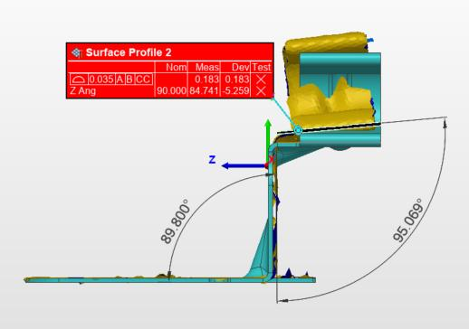
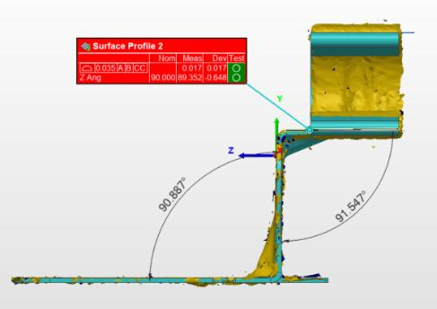
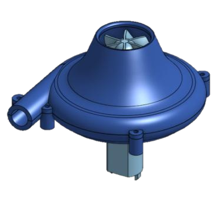
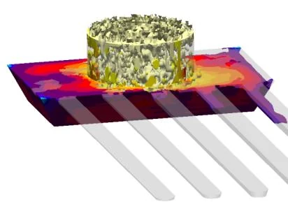
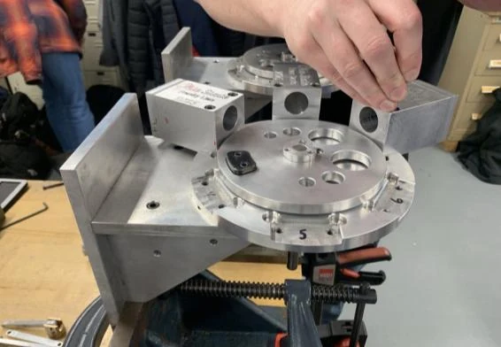
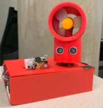
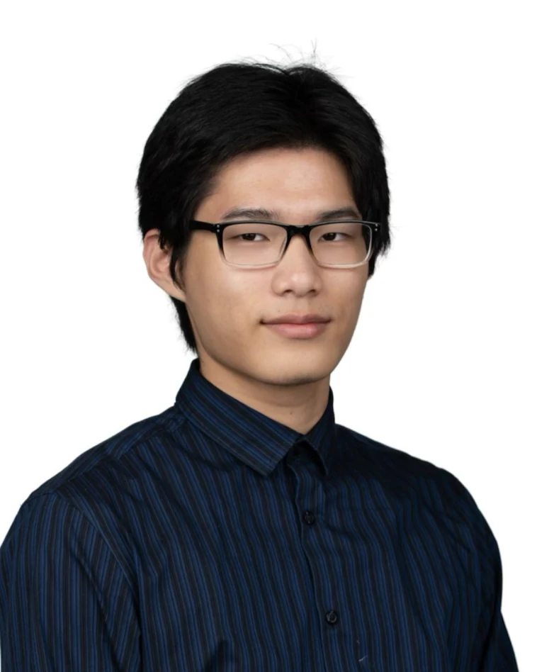

01Quality
Bracket misalignment at assembly
A deformed retaining bracket stopped a pilot dishwasher build. Scan-to-CAD and tolerance stack-up data supported the drawing revisions that cut the assembly failure rate from 3% to 0.5%.
Mechanical engineering · The Ohio State University
I'm a mechanical engineering student at Ohio State. Across four internship rotations at GE Appliances and TotalSim, and in casting research at the Advanced Casting Research Center, I've written GD&T schemes for suspension subsystems, supported a scan-to-CAD investigation of an assembly failure, and run CFD design studies on impeller geometry.

As found As found: surface-profile deviation 0.183 against a 0.035 callout (fail); Z angle 84.741 against 90.000 nominal.

Resolution Resolution: surface-profile deviation 0.017 (pass); Z angle 89.352.
| Part | Dishwasher retaining bracket |
|---|---|
| Method | PolyWorks scan-to-CAD |
| Callout | 0.035 | A | B | C |
| As found | 0.183, out of tolerance Fail |
| Resolution | 0.017, within tolerance Pass |
01
01
GD&T schemes to ASME Y14.5-2009 for three suspension subsystems, drawings released in Creo, and aluminum parts machined to 0.001 in.
02
PolyWorks scan-to-CAD and tolerance stack-ups to trace an assembly failure on dishwasher components, with the evidence presented in an engineering review.
03
STAR-CCM+ and HEEDS design studies at TotalSim, and MAGMASOFT casting simulations calibrated against die-casting data at ACRC.
02
6 case studies. Each follows the same path: problem, approach, validation, result.
01Quality
A deformed retaining bracket stopped a pilot dishwasher build. Scan-to-CAD and tolerance stack-up data supported the drawing revisions that cut the assembly failure rate from 3% to 0.5%.
02Design
GD&T schemes and technical specifications for three suspension subsystems, plus counterweight sizing to hold the sub-washer at its operating tilt. The design phase closed with a theoretical factor of safety above 2.

03DesignSimulation
An equation-driven impeller and volute modeled in SOLIDWORKS, simulated in ANSYS Fluent, printed in PLA, and checked against its predicted 24.55 CFM with an anemometer.

04SimulationMaterials & manufacturing
Calibrating MAGMASOFT casting simulations against physical die-casting results so that predicted porosity and fluidity can be trusted, and fewer physical trials are needed.

05Materials & manufacturingDesign
Aluminum piston and cylinder parts machined to 0.001 in from drawings and GD&T, then assembled into an air motor that ran at 400+ RPM.

06Design
A basic fan turned into a remotely configurable system: variable speed, distance-based speed, forward and reverse, ±45° angle control, and automatic oscillation from one Arduino.
August 2024 – present
Buckeye Space Launch Initiative
September 2023 – March 2025
Buckeye Solar Racing
03
March 2026 – present
Advanced Casting Research Center, The Ohio State University Columbus, OH
May 2026 – August 2026
GE Appliances, a Haier Company Louisville, KY
February 2026 – May 2026
TotalSim LLC Dublin, OH
August 2025 – January 2026
GE Appliances, a Haier Company Louisville, KY
May 2025 – August 2025
TotalSim LLC Dublin, OH
Education
The Ohio State University August 2023 – December 2027 (expected)
GPA 3.95 / 4.00
Certified SOLIDWORKS Professional (CSWP), Dassault Systèmes, June 2026
04
Grouped by what they were used for, with where I used them. Tools listed only on my resume appear below each group without a project attached.
Also on my resume Simcenter 3D
Also on my resume CNC machining, PFMEA
Also on my resume Python, MATLAB, Simulink, C++, Linux
05

I'm a mechanical engineering student at The Ohio State University, and my work so far sits where design, manufacturing, and quality meet. At GE Appliances I wrote GD&T schemes for suspension subsystems in one rotation, then used scan-to-CAD data in the next to help find out why a bracket was failing at assembly. At TotalSim I built parametric CAD and ran CFD design studies, and at the Advanced Casting Research Center I calibrate casting simulations against die-casting data.
I'm also on the Liquid Rocket Systems sub-team at Buckeye Space Launch Initiative, where I developed a parametric Venturi nozzle and sized the piston and O-rings for the aft closure. I'm interested in product lifecycle management as well: at GE I released drawings in Creo and managed part configurations in Windchill.
Away from coursework I'm prototyping a wireless vacuum cleaner and experimenting with ramen.
I'm looking for internship and early-career roles in mechanical design, manufacturing and quality engineering, simulation, and aerospace, where the drawing, the part, and the analysis all have to agree.
06
I'm looking for internship and early-career roles in mechanical design, manufacturing and quality engineering, simulation, and aerospace.